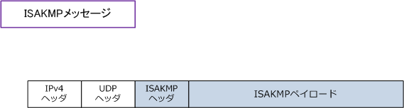
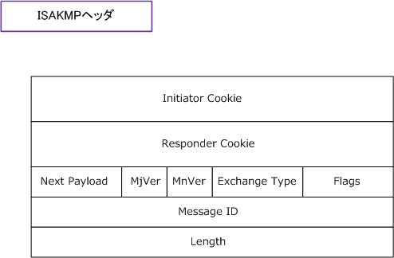
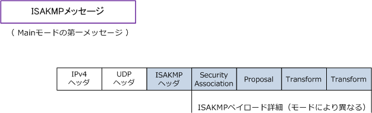

IPsec - IKE : ISAKMP Message
IKEv2でのSA
このページのフェーズ1・フェーズ2、Main / Aggressive / Quickモードは主に IKEv1 の説明です。IKEv2 では IKE SA がIKE制御通信を保護し、その中で確立する Child SA が実際のIPsec通信（ESPまたはAH）を保護します。初回の交換は IKE_SA_INIT と IKE_AUTH、追加のChild SAの作成や再鍵交換には CREATE_CHILD_SA を使用します。
IKE（ Internet Key Exchange ）
SAを生成するために、IKEという鍵交換プロトコルを使用できます。認証用のセッション鍵（ HMAC ）と 暗号化用のセッション鍵のこれら両方の鍵の生成、交換、更新がIKEにより自動で行われることになります。 IKEによるSAの生成はフェーズ1とフェーズ2のステップがあります。フェーズ1では各種パラメータを交換し ISAKMP SAを生成します。フェーズ2ではそのISAKMP SA上で各種パラメータを交換してIPsec SAを生成。
ISAKMPメッセージのフォーマット
ISAKMPメッセージは、IKE phase1、phase2 のメッセージ交換の際に送受信されます。このメッセージは ISAKMPヘッダとISAKMPペイロードで構成され、送信元、宛先ともUDPポート500を使用して伝送します。 ISAKMPヘッダには、クッキー値やモードを示す値 (Mainモード or Aggressiveモード) が含まれています。 ISAKMPペイロードには、IPsecでのSAのパラメータ、鍵計算のパラメータ、自身のIDの情報が含まれます。

これはIPsec-VPNの通信を確立するための全ての始まりとなるパケット。このメッセージがやり取りされた後 IPsecのパラメータが決定されて、例えばESPによる暗号化・認証が行われることが決定すると、ESPヘッダが 付加されたいわゆるIPsecパケットがネットワーク上に流れるようになります。これが Peer 間の全ての始まり。
ISAKMPヘッダ
ここでは、ISAKMPメッセージを構成する1つであるISAKMPヘッダの詳細なフォーマットについて説明します。

| ISAKMPヘッダの項目 | 説明 |
|---|---|
| Initiator Cookie | ISAKMP_SAのネゴシエーションの開始側が生成するクッキー値を示すフィールド。 |
| Responder Cookie | ISAKMP_SAのネゴシエーションの応答側が生成するクッキー値を示すフィールド。 |
| Next Payload | ISAKMPヘッダの後にくるISAKMPペイロードのタイプを示すフィールド。 |
| MjVer | ISAKMPプロトコルのメジャーバージョン番号を示すフィールド。値は 「1」 |
| MnVer | ISAKMPプロトコルのマイナーバージョン番号を示すフィールド。値は 「0」 |
| Exchange Type | モードを示すフィールド。具体的な値としては次の通り。IKE Phase1のMainモード 「2」 IKE Phase1のAggresiveモード「4」IKE Phase2のQuickモード「32」Transaction交換 「6」 |
| Flags | フラグを示すフィールド。上位5ビットは「0」と示される。下位3ビットは最下位から順番に A bit、C bit、E bitと呼ばれる。メッセージが暗号化されている場合は「E bit」が立っている。 |
| Message ID | IKE Phase 2で交換されるメッセージを識別するためのメッセージIDを示すフィールド。 |
| Length | ISAKMPメッセージ （ISAKMPヘッダ及びISAKMPペイロード）の長さを示すフィールド。 |
ISAKMPペイロード
ここでは、ISAKMPメッセージを構成するもう１つであるISAKMPペイロードのタイプについて説明します。 ISAKMPペイロードは、モード（Main, Aggressive, Quickなど）によりペイロードのタイプの組み合わせが 異なります。例えば、ISAKMPメッセージのMainモードの第一メッセージは以下のペイロードタイプが組み 合わさることになります。ペイロードタイプはタイプ値で表されます。そのタイプには以下の値があります。

| ペイロードのタイプ値 | ペイロードのタイプ名 |
|---|---|
| 0 | ペイロードなし |
| 1 | SA ( Security Association ) |
| 2 | P ( Proposal ) |
| 3 | T ( Transform ) |
| 4 | KE ( KeyExchange ) |
| 5 | ID ( Identification ) |
| 6 | CERT ( Certificate ) |
| 7 | CR ( CertificateRequest ) |
| 8 | HASH ( Hash ) |
| 9 | SIG ( Signature ) |
| 10 | NONCE ( Nonce ) |
| 11 | N ( Notification ) |
| 12 | D ( Delete ) |
| 13 | VID ( VendorID ) |
| 20 | NAT-D ( NAT discovery ) |
| 21 | NAT-OA ( NAT Original Address ) |